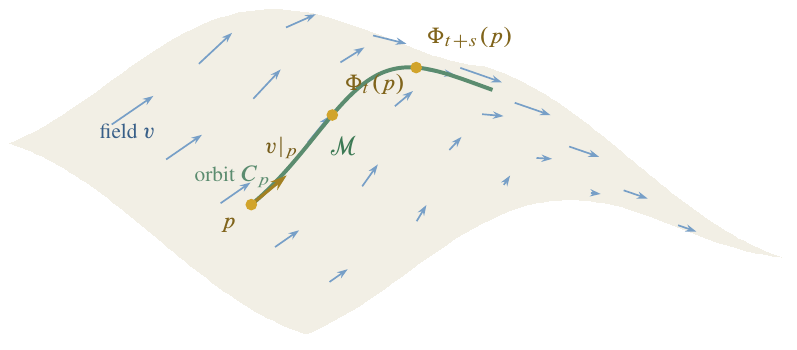

In the previous lecture we defined the tangent space \(V_p\) at a point \(p\in\mathcal{M}\), coordinate bases, curves, and tangent vector fields. We now study how vector fields generate flows (one-parameter groups of diffeomorphisms), how to form new vector fields from old ones via the commutator, and the algebraic machinery of tensors that lies at the heart of general relativity.
Let ℳ be a smooth manifold. A one-parameter group of diffeomorphisms is a C∞ map Φ : ℝ × ℳ → ℳ , (t,p) ↦ Φt(p) , such that
for each fixed t ∈ ℝ, the map Φt : ℳ → ℳ is a diffeomorphism, and
for all s, t ∈ ℝ, $$\label{eq:group-law} \boxed{\Phi_s \circ \Phi_t = \Phi_{t+s}}\,.$$
Choosing \(s = -t\) in [eq:group-law] immediately gives \(\Phi_0 = \id\) (the identity map on \(\mathcal{M}\)).

Given a one-parameter group \(\Phi_t\), we obtain a tangent vector field \(v\) on \(\mathcal{M}\) as follows. For a fixed \(p\in\mathcal{M}\), the map \[C_p: \mathbb{R}\to\mathcal{M}\,,\qquad t\mapsto \Phi_t(p)\,,\] is a smooth curve through \(p\) (with \(C_p(0)=p\)), called the orbit of \(p\) under \(\Phi_t\). Define \(v|_p\) to be the tangent vector to \(C_p\) at \(t=0\): \[\label{eq:flow-to-field} v|_p(f) = \frac{d }{d t}(f\circ\Phi_t(p))\bigg|_{t=0}\,, \qquad f\in\mathscr{F}(\mathcal{M})\,.\] Repeating this for every \(p\in\mathcal{M}\) yields a smooth vector field \(v\).
Conversely, given a smooth vector field \(v\) on \(\mathcal{M}\), we seek integral curves of \(v\): a family of curves in \(\mathcal{M}\), one through each point \(p\), such that the tangent vector to the curve at \(p\) equals \(v|_p\).
Let \(C\) be such an integral curve through \(p\), and let \((x^1,\dots,x^n)\) be local coordinates. Then the tangent vector to \(C\) acts on \(f\in\mathscr{F}(\mathcal{M})\) by \[\label{eq:tangent-to-C} T(f) = \frac{d }{d t}(f\circ C) = \sum_{\mu=1}^{n} \frac{d x^\mu}{d t}\, X_\mu(f)\,,\] where \(X_\mu = \partial/\partial x^\mu|_p\) is the coordinate basis. Meanwhile, the vector field gives \[\label{eq:field-at-p} v(f) = \sum_{\mu=1}^{n} v^\mu\, X_\mu(f)\,.\] Setting [eq:tangent-to-C] equal to [eq:field-at-p], we must solve the system of coupled ordinary differential equations \[\label{eq:integral-curve-ode} \boxed{\frac{d x^\mu}{d t} = v^\mu(x^1,\dots,x^n)} \qquad \mu = 1,\dots,n\,.\]
By the standard existence and uniqueness theorem for ODEs (proved via fixed-point arguments; see, e.g., Coddington and Levinson ), there exists \(\varepsilon > 0\) such that a unique solution exists for all \(t\in(-\varepsilon,\varepsilon)\).
If ℳ is compact, the integral curves exist for all t ∈ ℝ, and the family of integral curves defines a genuine one-parameter group of diffeomorphisms.
Think of v as a velocity field describing steady fluid flow on ℳ. The integral curves are the streamlines: each fluid particle follows the integral curve through its initial position. The map Φt advances every particle by time t.
With flows and integral curves in hand, we have assembled the basic toolkit for describing “mechanics on manifolds”—how points move under smooth evolution. Notice, however, that nothing in our discussion so far has involved special or general relativity: we are still working with bare manifolds, without any notion of distance, angle, or causal structure. The machinery we develop next—the commutator of vector fields, and especially the algebraic theory of tensors—will supply precisely the additional structure needed to formulate physics on curved spacetimes.
Let v and w be smooth vector fields on a manifold ℳ. Define a new map u : ℱ(ℳ) → ℱ(ℳ) by $$\label{eq:commutator} \boxed{u(f) = v\bigl(w(f)\bigr) - w\bigl(v(f)\bigr)} \qquad\text{for all } f\in\mathscr{F}(\mathcal{M})\,.$$ This map u is called the commutator (or Lie bracket) of v and w, and is written u = [v,w].
Show that [v,w] as defined in [eq:commutator] is indeed a vector field, i.e. it satisfies linearity and the Leibniz rule at every point.
Although v and w each involve first-order derivatives, the second-order terms cancel in the combination v(w(f)) − w(v(f)), leaving [v,w] a first-order operator—hence a genuine vector field. The commutator plays a central role in the theory of Lie groups and will reappear when we study Lie derivatives and the curvature of connections.
Before defining tensors on manifolds, we review the key algebraic constructions that build new vector spaces from given ones. The guiding observation is this: our manifold \(\mathcal{M}\) canonically provides a single “atomic” vector space at each point—the tangent space \(V_p\). Every other geometric object we need (the metric, the curvature tensor, differential forms, …) lives not in \(V_p\) itself but in some vector space built from \(V_p\) via elementary algebraic operations.
One should assess the value of each construction by whether it produces quantities with a clear physical interpretation. Just because an operation is available does not mean physics requires it.
Let \(V\) and \(W\) be finite-dimensional real vector spaces. The principal operations are:
Taking duals: \(V \mapsto V^*\).
Taking direct sums: \(V,\, W \mapsto V\oplus W\).
Taking tensor products: \(V,\, W \mapsto V\otimes W\).
Taking subspaces: \(U\subset V\).
Taking exterior (wedge) products: \(V,\, W \mapsto V\wedge W\).
Taking joins: \(V,\, W \mapsto V\vee W\).
In general relativity, duals and tensor products are by far the most important: the metric, for instance, naturally lives in a tensor product of two copies of \(V_p^*\). Direct sums play a role in fiber-bundle theory but rarely appear in our treatment; wedge products feature in the theory of differential forms; joins and intersections are more prominent in quantum information theory. We develop the first three in detail below.
Let V be a real vector space. The dual space V* is the vector space of all linear functions f : V → ℝ. Elements of V* are called dual vectors (or covectors, or one-forms).
Show that V* is a real vector space under pointwise addition and scalar multiplication.
Let {v1, …, vn} be a basis for V. We obtain a dual basis {(vμ)* ∣ μ = 1, …, n} for V* defined by (vμ)*(vν) = δμν , where δμν is the Kronecker delta.
Notice the placement of indices: elements of \(V\) carry a subscript (lower index), while elements of \(V^*\) carry a superscript (upper index) in their labelling. This convention will become essential when we work with tensor components on manifolds.
Show that (V*)* ≅ V (the double dual is canonically isomorphic to V). This result will be used frequently and without further comment throughout the course.
Show that dim (V*) = dim (V).
The map vμ ↦ (vμ)* gives an isomorphism between V and V*, but this isomorphism depends on the choice of basis—it is non-canonical. Had we chosen a different basis for V, we would obtain a different identification between V and V*. In physics we seek statements that are independent of any particular coordinate system chosen by the observer. A canonical (basis-free) isomorphism Vp → Vp* arises only once we equip the manifold with a metric; this is the operation of “lowering an index” that we shall meet shortly.
The tensor product is one of the most versatile constructions in all of mathematical physics. Beyond its central role in general relativity, it appears whenever one deals with multi-particle systems: the state space of \(N\) quantum-mechanical particles is the tensor product of the individual Hilbert spaces, and tensor products of qubit spaces underpin quantum information theory and quantum computing. We give three perspectives on the construction—an informal definition, a formal quotient-space definition, and the dual (multilinear-map) characterisation used in most relativity texts—so that you can make reference to whichever viewpoint is most convenient in your future studies.
Let V and W be finite-dimensional real vector spaces. The tensor product V ⊗ W consists of elements of the form v ⊗ w (for v ∈ V, w ∈ W) together with all their linear combinations, subject to the bilinearity condition: (a1v1+a2v2) ⊗ (b1w1+b2w2) = a1b1 v1 ⊗ w1 + a1b2 v1 ⊗ w2 + a2b1 v2 ⊗ w1 + a2b2 v2 ⊗ w2 .
Let V = ℝ2, W = ℝ2. Then V ⊗ W = ℝ2 ⊗ ℝ2 ≅ ℝ4.
(This subsection may be skipped on a first reading without loss of continuity.)
More precisely, one defines \[\label{eq:tp-formal} V\otimes W \;\equiv\; F(V\times W)\big/{\sim}\,,\] where \(F(V\times W)\) is the free vector space on the set \(V\times W\) (formal linear combinations of ordered pairs \((v,w)\)). Since \(V\times W\) is an infinite set, \(F(V\times W)\) is infinite-dimensional and far too large; the equivalence relation \(\sim\) collapses it to the correct finite-dimensional space. The relation \(\sim\) is generated by:
identity, symmetry, and transitivity (equivalence relation axioms),
distributivity: \((v_1+v_2,\,w) \sim (v_1,w) + (v_2,w)\) and \((v,\,w_1+w_2) \sim (v,w_1) + (v,w_2)\),
scalar multiples: \(c(v,w) \sim (cv,\,w) \sim (v,\,cw)\) for all \(c\in\mathbb{R}\).
The equivalence class of \((v,w)\) is written \(v\otimes w\). Elements of \(V\otimes W\) are linear combinations of simple tensors \(v_j\otimes w_k\).
Warning: given u ∈ V ⊗ W, it is not always true that u = v ⊗ w for some v ∈ V, w ∈ W. Generically, u is a sum of simple tensors that cannot be factored.
Show that dim (V⊗W) = dim (V) ⋅ dim (W). Hint: If {vμ} is a basis for V and {wν} is a basis for W, show that {vμ ⊗ wν} is a basis for V ⊗ W.
The tensor product is associative: \[\label{eq:tp-assoc} U\otimes(V\otimes W) \;\cong\; (U\otimes V)\otimes W\,,\] so we may write \(U\otimes V\otimes W\) without ambiguity.
Let V and W be real vector spaces. A tensor (in the dual sense) is a multilinear map T : V × W → ℝ, i.e. T(a1v1+a2v2, b1w1+b2w2) = a1b1 T(v1,w1) + a1b2 T(v1,w2) + a2b1 T(v2,w1) + a2b2 T(v2,w2) .
This is the “classical” approach to tensor products, and the one most commonly seen in general relativity textbooks (including Wald ). It is related to the informal definition by \[\label{eq:tp-dual-relation} (V\otimes W)^* \;\cong\; \{T: V\times W \to \mathbb{R} \mid T \text{ multilinear}\}\,.\]
Show that (V⊗W)* ≅ V* ⊗ W*.
We now apply these algebraic constructions to the tangent space \(V_p\) at a point \(p\in\mathcal{M}\).
From \(V_p\) we build:
the dual space \(V_p^*\) (cotangent vectors),
tensor products such as \(V_p\otimes V_p\), \(V_p^*\otimes V_p\), etc.,
and more generally, the space \(\underbrace{V_p\otimes\cdots\otimes V_p}_{k}\,\otimes\, \underbrace{V_p^*\otimes\cdots\otimes V_p^*}_{l} \;\cong\; V_p^{\otimes k}\otimes (V_p^*)^{\otimes l}\).
Since \((V_p^*)^* \cong V_p\), an element \(t\in V_p\) can be viewed as a linear function on \(V_p^*\) as well.
One could also form “mixed” tensor products such as \(V_p\otimes V_p^*\otimes V_p\), where the factors are interleaved. In general relativity, however, the order of the individual \(V_p\) and \(V_p^*\) factors rarely matters (many of the tensors we encounter have symmetry properties that make the ordering irrelevant), so it is conventional to cluster all \(V_p\) factors to the left and all \(V_p^*\) factors to the right. In quantum information theory, by contrast, the ordering of tensor-product factors carries physical significance (each factor corresponds to a distinct subsystem), and one must keep careful track of it.
A tensor of type (k,l) at p is an element T ∈ Vp⊗k ⊗ (Vp*)⊗l . Equivalently, T is a multilinear map $$T: \underbrace{V_p^*\times\cdots\times V_p^*}_{k} \;\times\; \underbrace{V_p\times\cdots\times V_p}_{l} \;\longrightarrow\; \mathbb{R}\,.$$ The vector space of all tensors of type (k,l) at p is denoted 𝒯(k,l).
\[\label{eq:dim-tensor-space} \dim\bigl(\mathcal{T}(k,l)\bigr) = n^{k+l}\,, \qquad\text{where } n = \dim(V_p)\,.\]
We adopt the convention V⊗0 ≅ ℝ, so that 𝒯(0,0) ≅ ℝ (scalars).
A tensor of type (0,1) is an element of Vp⊗0 ⊗ (Vp*)⊗1 ≅ ℝ ⊗ Vp* ≅ Vp*. It is simply a dual vector (covector).
A tensor of type (1,0) is an element of Vp⊗1 ⊗ (Vp*)⊗0 ≅ Vp ⊗ ℝ ≅ Vp. It is simply a vector.
A tensor of type (1,1) is an element of Vp ⊗ Vp*. Such a tensor T can be interpreted in three equivalent ways:
as an element of Vp ⊗ Vp*,
as a multilinear map Vp* × Vp → ℝ (equivalently, a dual vector in (Vp*⊗Vp)*),
as a linear transformation T : Vp → Vp, i.e. a matrix.
Choose a basis \(\{v_\mu\}\) of \(V_p\) with dual basis \(\{(v^\nu)^*\}\) for \(V_p^*\). A type-\((1,1)\) tensor \(T\) can be expanded as \[\label{eq:type11-expansion} T = \sum_{\mu,\nu} t^\mu{}_\nu\; v_\mu \otimes (v^\nu)^* \;\in\; V_p\otimes V_p^*\,.\] The scalars \([T]^\mu{}_\nu = t^\mu{}_\nu\) are called the components (or matrix elements) of \(T\) in the basis \(\{v_\mu\}\).
Action on a vector. Let \(w\in V_p\), with \(w = \sum_\nu w^\nu\, v_\nu\). Then \[\begin{aligned} Tw &= \biggl(\sum_{\mu,\nu} t^\mu{}_\nu\; v_\mu\otimes (v^\nu)^* \biggr)(w) = \sum_{\mu,\nu} t^\mu{}_\nu\; (v^\nu)^*(w)\; v_\mu \notag\\ &= \sum_{\mu,\nu} t^\mu{}_\nu\; w^\nu\; v_\mu\,. \label{eq:tensor-action} \end{aligned}\] Therefore the components of \(Tw\) are \[\label{eq:tensor-action-components} \boxed{[Tw]^\mu = \sum_{\nu=1}^{n} t^\mu{}_\nu\, w^\nu}\,.\] This is an example of tensor contraction.
Let T ∈ 𝒯(k,l) with k ≥ 1 and l ≥ 1. The contraction over the j-th contravariant and j′-th covariant index is the map Cj, j′ : 𝒯(k,l) → 𝒯(k−1,l−1) defined (interpreting T as a multilinear map) by $$\label{eq:contraction} (C_{j,j'}\, T)(\dots) = \sum_{\sigma=1}^{n} T\bigl(\dots,\underbrace{(v^\sigma)^*}_{j\text{-th slot}}, \dots;\; \underbrace{v_\sigma}_{j'\text{-th slot}},\dots\bigr)\,,$$ where {vσ} is any basis for Vp and {(vσ)*} is the dual basis.
In terms of components: \[\label{eq:contraction-components} \boxed{(C_{j,j'}\, T)^{\mu_1\cdots\mu_{k-1}}{}_{\nu_1\cdots\nu_{l-1}} = \sum_{\sigma=1}^{n} T^{\mu_1\cdots\sigma\cdots\mu_{k-1}}{}_{\nu_1\cdots\sigma\cdots\nu_{l-1}}}\] where \(\sigma\) appears in the \(j\)-th upper position and the \(j'\)-th lower position and is summed over.
Show that the contraction is independent of the choice of basis.
Let S ∈ 𝒯(k,l) and T ∈ 𝒯(k′,l′). Their outer product (or tensor product) S ⊗ T ∈ 𝒯(k+k′,l+l′) is defined in components by (S⊗T)μ1⋯μk μk + 1⋯μk + k′ν1⋯νl νl + 1⋯νl + l′ = Sμ1⋯μkν1⋯νl ⋅ Tμk + 1⋯μk + k′νl + 1⋯νl + l′ .
Intrinsically, \(S\otimes T\) lives in \[\bigl(V_p^{\otimes k}\otimes (V_p^*)^{\otimes l}\bigr) \otimes \bigl(V_p^{\otimes k'}\otimes (V_p^*)^{\otimes l'}\bigr)\,,\] which is rearranged (collecting all \(V_p\) factors to the left and all \(V_p^*\) factors to the right) to give an element of \(V_p^{\otimes(k+k')}\otimes (V_p^*)^{\otimes(l+l')}\).
Every tensor can be built from vectors and dual vectors using the outer product, and then contracted. The outer product increases the type, while contraction decreases it. Together, these two operations generate the full algebra of tensor manipulations used throughout general relativity.